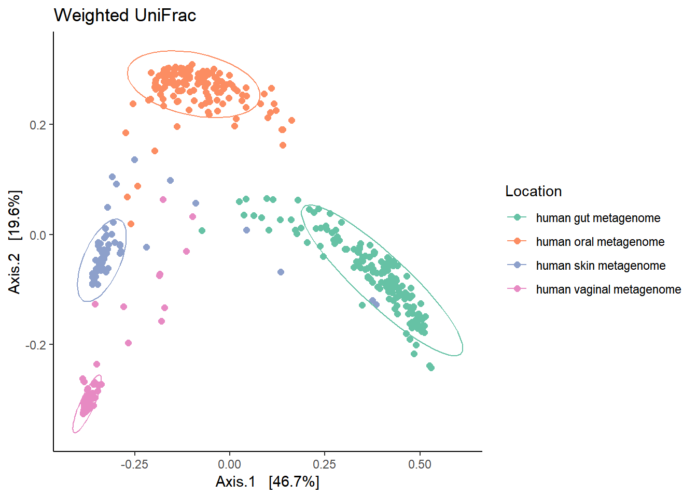
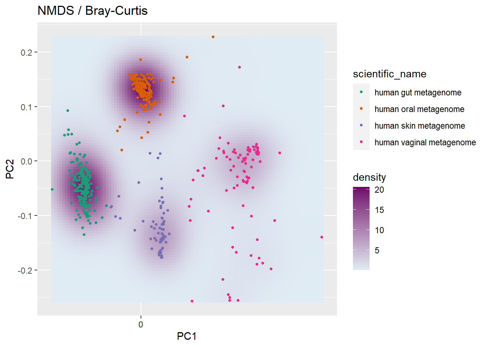

5 Beta diversity metrics
Beta-diversity: Measures for differences between samples from different groups to identify if there are differences in the overall community composition and structure.
Load packages and data
library(microbiome) # data analysis and visualisation
library(phyloseq) # also the basis of data object. Data analysis and visualisation
library(RColorBrewer) # nice color options
library(ggpubr) # publication quality figures, based on ggplot2
library(dplyr) # data handling For more information:
Waste Not, Want Not: Why Rarefying Microbiome Data Is Inadmissible.
Normalisation and data transformation.
What is Constrained and Unconstrained Ordination.
Microbiome Datasets Are Compositional: And This Is Not Optional
Compositional analysis: a valid approach to analyze microbiome high-throughput sequencing data
# read non rarefied data
ps1 <- readRDS("./phyobjects/ps.ng.tax.rds")
# read rarefied data
ps0.rar.rds <- readRDS("./phyobjects/ps0.rar.rds")
# use print option to see the data saved as phyloseq object.5.1 Phylogenetic beta-diversity metrics
5.1.1 Unweighted Unifrac
Unweighted Unifrac is based on presence/absence of different taxa and abundance is not important. However, it is sensitive to the sequencing depth. If a sample is sequenced more than the others then it may have many OTUs (most of them unique) consequently affecting the unifrac dissimilarity estimation.
Usually, using subOTU/ASV approaches many singletons/OTUs with very low reads are discarded. If you have you won data you try the following code. For data from NG-tax we will skip this step as we have no singletons.
# if we remove OTUs that are detected atleast 10 times in 5% of the samples
ps0.rar.filtered <- core(ps0.rar.rds, detection = 10, prevalence = 0.05)
summarize_phyloseq(ps0.rar.filtered)
# we reduce the sparsity considerably. For data from OTU picking
Since the data used here consists of different body sites with distinct biological properties, the results of ordination do not change a lot by filtering “rare” OTUs. Once again, knowing the biology of your samples and making choices rationally and documenting them is crucial.
Feel free to use the OTU-picking strategy phyloseq object to investigate yourself.
ordu.unwt.uni <- ordinate(ps0.rar.rds, "PCoA", "unifrac", weighted=F)
# check for Eigen values
# barplot(ordu.unwt.uni$values$Eigenvalues[1:10])
unwt.unifrac <- plot_ordination(ps0.rar.rds,
ordu.unwt.uni, color="scientific_name")
unwt.unifrac <- unwt.unifrac + ggtitle("Unweighted UniFrac") + geom_point(size = 2)
unwt.unifrac <- unwt.unifrac + theme_classic() + scale_color_brewer("Location", palette = "Set2")
print(unwt.unifrac)
Try repeating the above ordination using non-filtered phyloseq object.
5.1.2 Weighted Unifrac
Weighted Unifrac will consider the abundances of different taxa.
ps1.rel <- microbiome::transform(ps1, "compositional")
ordu.wt.uni <- ordinate(ps1.rel , "PCoA", "unifrac", weighted=T)
# check for Eigen values
# barplot(ordu.unwt.uni$values$Eigenvalues[1:10])
wt.unifrac <- plot_ordination(ps1.rel,
ordu.wt.uni, color="scientific_name")
wt.unifrac <- wt.unifrac + ggtitle("Weighted UniFrac") + geom_point(size = 2)
wt.unifrac <- wt.unifrac + theme_classic() + scale_color_brewer("Location", palette = "Set2")
print(wt.unifrac)
print(wt.unifrac + stat_ellipse())
The figure brings forward an important characteristics of microbiome data called the ‘Horse-shoe effect’. An investigation and explaination for this can be found in the article by Morton JT., et al. 2017 Uncovering the Horseshoe Effect in Microbial Analyses.
You can repeating this analysis with phyloseq object from OTU-picking approach.
Another important aspect regarding weighted unifrac is its property of having heavier weights for abundant taxa. To detect changes in moderately abundant lineages, an extenstion called generalized (UniFrac distance)(https://www.ncbi.nlm.nih.gov/pmc/articles/PMC3413390/) has been developed. In this test data, we expect sufficient biological variation in composition between sites and hence, we do not apply GUniFrac.
To reiterate: It is crucial to understand the biological features of the samples. Although these are exploratory approaches, it is important to differentiate between biological signal and technical artifacts.
5.2 Population-level Density landscapes
p <- plot_landscape(ps1.rel,
"NMDS",
"bray",
col = "scientific_name") +
labs(title = paste("NMDS / Bray-Curtis"))
p <- p + scale_color_brewer(palette = "Dark2")+ scale_fill_gradient(low = "#e0ecf4", high = "#6e016b") ## Scale for 'fill' is already present. Adding another scale for 'fill',
## which will replace the existing scale.p 
Bray-Curtis dissimilarity does not consider phylogenetic relationships between OTUs. There are several distance methods and a list can be obtained by typying ?distanceMethodList in the console pane.
Section on multivariate analysis will be discussed on Day3.
5.3 PERMANOVA
Permutational multivariate analysis of variance further reading
library(vegan)## Loading required package: permute## Loading required package: lattice## This is vegan 2.5-2metadf <- data.frame(sample_data(ps1.rel))
unifrac.dist <- UniFrac(ps1.rel,
weighted = TRUE,
normalized = TRUE,
parallel = FALSE,
fast = TRUE)
permanova <- adonis(unifrac.dist ~ scientific_name, data = metadf)
permanova##
## Call:
## adonis(formula = unifrac.dist ~ scientific_name, data = metadf)
##
## Permutation: free
## Number of permutations: 999
##
## Terms added sequentially (first to last)
##
## Df SumsOfSqs MeanSqs F.Model R2 Pr(>F)
## scientific_name 3 71.912 23.9705 376.03 0.7059 0.001 ***
## Residuals 470 29.960 0.0637 0.2941
## Total 473 101.872 1.0000
## ---
## Signif. codes: 0 '***' 0.001 '**' 0.01 '*' 0.05 '.' 0.1 ' ' 15.4 Checking the homogeneity condition
Type ?betadisper in R console for more information.
ps.disper <- betadisper(unifrac.dist, metadf$scientific_name)
permutest(ps.disper, pairwise = TRUE)##
## Permutation test for homogeneity of multivariate dispersions
## Permutation: free
## Number of permutations: 999
##
## Response: Distances
## Df Sum Sq Mean Sq F N.Perm Pr(>F)
## Groups 3 1.0014 0.33381 31.889 999 0.001 ***
## Residuals 470 4.9200 0.01047
## ---
## Signif. codes: 0 '***' 0.001 '**' 0.01 '*' 0.05 '.' 0.1 ' ' 1
##
## Pairwise comparisons:
## (Observed p-value below diagonal, permuted p-value above diagonal)
## human gut metagenome human oral metagenome
## human gut metagenome 1.0000e-03
## human oral metagenome 8.3027e-05
## human skin metagenome 2.8177e-06 2.4596e-02
## human vaginal metagenome 3.1013e-18 1.4078e-10
## human skin metagenome human vaginal metagenome
## human gut metagenome 1.0000e-03 0.001
## human oral metagenome 2.9000e-02 0.001
## human skin metagenome 0.014
## human vaginal metagenome 7.0275e-03sessionInfo()## R version 3.4.4 (2018-03-15)
## Platform: x86_64-w64-mingw32/x64 (64-bit)
## Running under: Windows 10 x64 (build 16299)
##
## Matrix products: default
##
## locale:
## [1] LC_COLLATE=English_United States.1252
## [2] LC_CTYPE=English_United States.1252
## [3] LC_MONETARY=English_United States.1252
## [4] LC_NUMERIC=C
## [5] LC_TIME=English_United States.1252
##
## attached base packages:
## [1] methods stats graphics grDevices utils datasets base
##
## other attached packages:
## [1] vegan_2.5-2 lattice_0.20-35 permute_0.9-4
## [4] dplyr_0.7.5 ggpubr_0.1.6 magrittr_1.5
## [7] RColorBrewer_1.1-2 microbiome_1.1.10013 ggplot2_2.2.1.9000
## [10] phyloseq_1.22.3
##
## loaded via a namespace (and not attached):
## [1] tidyselect_0.2.4 xfun_0.1 reshape2_1.4.3
## [4] purrr_0.2.4 splines_3.4.4 rhdf5_2.22.0
## [7] colorspace_1.3-2 htmltools_0.3.6 stats4_3.4.4
## [10] mgcv_1.8-23 yaml_2.1.19 survival_2.41-3
## [13] rlang_0.2.0 pillar_1.2.2 withr_2.1.2
## [16] glue_1.2.0 BiocGenerics_0.24.0 bindrcpp_0.2.2
## [19] foreach_1.4.4 plyr_1.8.4 bindr_0.1.1
## [22] stringr_1.3.1 zlibbioc_1.24.0 Biostrings_2.46.0
## [25] munsell_0.4.3 gtable_0.2.0 codetools_0.2-15
## [28] evaluate_0.10.1 labeling_0.3 Biobase_2.38.0
## [31] knitr_1.20 IRanges_2.12.0 biomformat_1.6.0
## [34] parallel_3.4.4 Rcpp_0.12.17 backports_1.1.2
## [37] scales_0.5.0 S4Vectors_0.16.0 jsonlite_1.5
## [40] XVector_0.18.0 digest_0.6.15 Rtsne_0.13
## [43] stringi_1.2.2 bookdown_0.7 grid_3.4.4
## [46] ade4_1.7-11 rprojroot_1.3-2 tools_3.4.4
## [49] lazyeval_0.2.1 tibble_1.4.2 cluster_2.0.6
## [52] tidyr_0.8.1 ape_5.1 pkgconfig_2.0.1
## [55] MASS_7.3-49 Matrix_1.2-12 data.table_1.11.2
## [58] assertthat_0.2.0 rmarkdown_1.9 iterators_1.0.9
## [61] R6_2.2.2 multtest_2.34.0 igraph_1.2.1
## [64] nlme_3.1-131.1 compiler_3.4.4